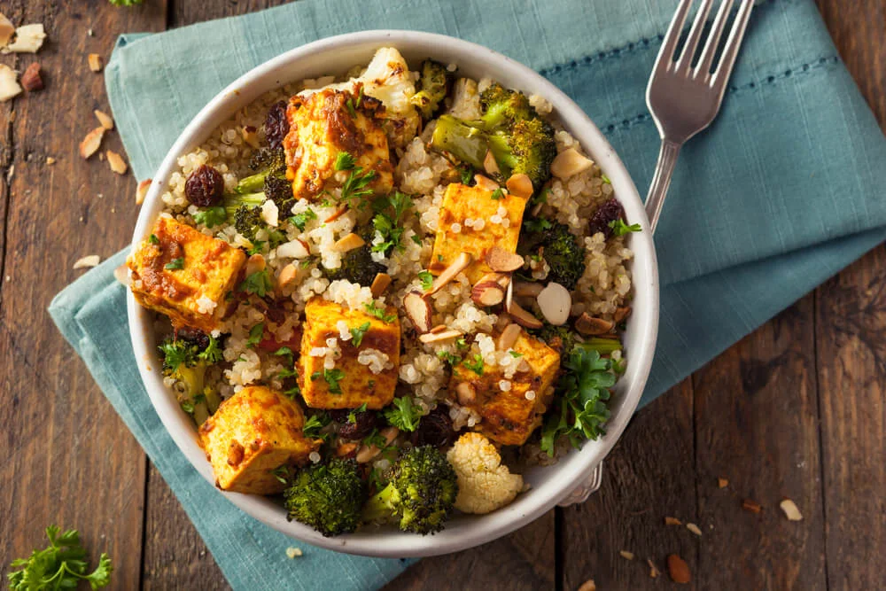
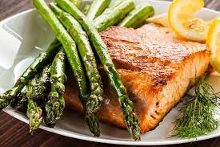
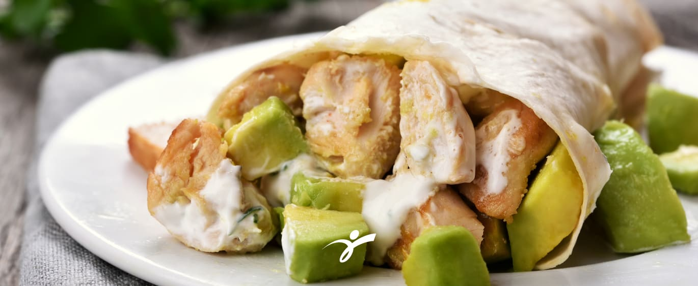
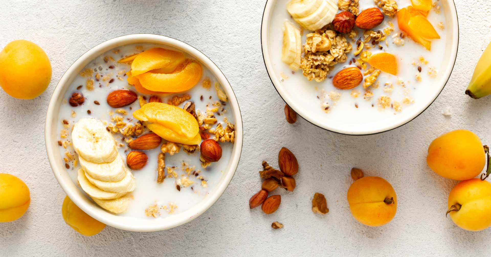

Comidas que no pierden sabor, te ayudan a bajar de peso y conseguir esas protes
Descubre recetas que no pierden el sabor de la gastronomía peruana, y que no afecta tu peso negativamente.
Ensalada de Quinoa y Vegetales Asados:
- 1 taza de quinoa cocida: La quinoa es una excelente fuente de proteínas vegetales, fibra y varios nutrientes esenciales como hierro y magnesio. Es un ingrediente ideal para una dieta fitness debido a su valor nutricional y su bajo índice glucémico.
- 1 calabacín mediano: El calabacín es bajo en calorías y rico en fibra, vitamina C y antioxidantes. Agrega textura y sabor a la ensalada sin comprometer su contenido calórico.
- 1 pimiento rojo o amarillo: Los pimientos son ricos en vitamina C y antioxidantes. También añaden un toque de dulzura y color vibrante a la ensalada.
- 1 cebolla roja pequeña: Las cebollas contienen compuestos vegetales que pueden promover la salud cardiovascular y reducir la inflamación. Además, añaden sabor y un crujido suave a la ensalada.
- 2 tazas de espinacas frescas: Las espinacas son una excelente fuente de hierro, calcio y vitaminas A y K. Son bajas en calorías y agregan un impulso nutricional a la ensalada.
- 1 taza de tomates cherry: Los tomates cherry son ricos en antioxidantes y vitamina C. Aportan un sabor fresco y jugoso a la ensalada.
- 1 aguacate maduro: El aguacate es una fuente saludable de grasas monoinsaturadas, fibra y diversos nutrientes. Añade cremosidad y saciedad a la ensalada.
- Aderezo de limón y aceite de oliva: Para el aderezo, puedes mezclar el jugo de medio limón con 2 cucharadas de aceite de oliva virgen extra. El limón agrega un toque cítrico refrescante, mientras que el aceite de oliva proporciona grasas saludables y un sabor suave.
- En un tazón grande, mezcla la quinoa cocida, el calabacín cortado en rodajas, los pimientos en tiras, la cebolla roja en rodajas finas, las espinacas frescas, los tomates cherry cortados por la mitad y el aguacate en cubos.
- Prepara el aderezo mezclando el jugo de medio limón y 2 cucharadas de aceite de oliva virgen extra. Remueve bien hasta que esté combinado.
- Vierte el aderezo sobre la ensalada y mezcla suavemente para asegurarte de que todos los ingredientes estén bien cubiertos.
- Sirve la ensalada inmediatamente y disfruta.
- Alto contenido proteico: La quinoa y el aguacate son fuentes de proteínas vegetales de alta calidad, lo que ayuda a mantener y reparar los tejidos musculares después del ejercicio.
- Fibra y nutrientes: La ensalada contiene una variedad de vegetales ricos en fibra, vitaminas y antioxidantes, lo que contribuye a una buena digestión, fortalece el sistema inmunológico y promueve la salud en general.
- Bajo en calorías: Los ingredientes utilizados en la ensalada son bajos en calorías, lo que la convierte en una opción ideal para aquellos que buscan mantener o perder peso.
- Grasas saludables: El aguacate y el aceite de oliva proporcionan grasas saludables, que son importantes para una dieta equilibrada y contribuyen ala saciedad.
- Versatilidad: Puedes personalizar la ensalada añadiendo proteínas adicionales como pollo a la parrilla, camarones o tofu a la mezcla para adaptarla a tus necesidades específicas.
Ingredientes:
Preparación:
Esta ensalada es un plato ideal para la vida fitness por varias razones:

Salmón al Horno con Espárragos:
- 2 filetes de salmón frescos
- 1 manojo de espárragos frescos
- 2 cucharadas de aceite de oliva virgen extra
- 2 dientes de ajo picados
- Jugo de 1 limón
- Sal y pimienta al gusto
- Precalienta el horno a 180°C.
- Coloca los filetes de salmón y los espárragos en una bandeja para hornear forrada con papel de aluminio o pergamino. Asegúrate de que los filetes de salmón estén colocados con la piel hacia abajo.
- Rocía el aceite de oliva sobre los filetes de salmón y los espárragos. Añade el ajo picado uniformemente sobre el salmón y los espárragos. Exprime el jugo de limón sobre ellos y sazona con sal y pimienta al gusto.
- Hornea la bandeja en el horno precalentado durante 15-20 minutos, o hasta que el salmón esté cocido y se desmenuce fácilmente con un tenedor. El tiempo de cocción puede variar según el grosor de los filetes de salmón.
- Retira del horno y sirve caliente.
- Proteínas de alta calidad
- Ácidos grasos omega-3
- Bajo en calorías
- Vitaminas y minerales
- Grasas saludables
Ingredientes:
Preparación:
Razones para elegir esta receta:

Wraps de Pollo y Aguacate:
- Tortillas de trigo integrales
- 2 pechugas de pollo cocidas y desmenuzadas
- 1 aguacate maduro en rodajas
- Lechuga
- 1 tomate en rodajas
- 4 cucharadas de yogur griego
- Jugo de 1 limón
- Sal y pimienta al gusto
- Extiende una tortilla de trigo integral sobre una superficie plana.
- Coloca en el centro de la tortilla la pechuga de pollo desmenuzada, las rodajas de aguacate, la lechuga y el tomate.
- En un tazón pequeño, mezcla el yogur griego con el jugo de limón, sal y pimienta. Prueba y ajusta los condimentos según tu preferencia.
- Vierte la salsa de yogur sobre los ingredientes en la tortilla.
- Enrolla la tortilla, doblando los extremos hacia adentro y luego enrollando firmemente desde un extremo hasta el otro.
- Corta el wrap enrollado en rodajas para facilitar su consumo.
- Alta en proteínas
- Grasas saludables
- Fibra dietética
- Nutrientes esenciales
- Opción versátil
- Fácil de preparar
- Equilibrio nutricional
Ingredientes:
Preparación:
Razones para elegir esta receta:

Bowl de Avena y Frutas:
- 1 taza de avena integral cocida
- 1 taza de frutas frescas variadas
- 1 cucharada de semillas de chía
- 1 cucharada de nueces o almendras picadas
- Opcional: 1 cucharadita de miel o jarabe de arce para endulzar al gusto
- En un tazón, coloca la avena cocida.
- Agrega las frutas frescas, cortadas en trozos pequeños.
- Espolvorea las semillas de chía y las nueces o almendras picadas sobre la avena y las frutas.
- Opcionalmente, puedes rociar una cucharadita de miel o jarabe de arce para endulzar el bowl.
- Mezcla suavemente todos los ingredientes para combinarlos.
- Avena integral
- Frutas frescas
- Semillas de chía
- Nueces o almendras
- Opcionalmente, miel o jarabe de arce
Ingredientes:
Preparación:
Razones para elegir este bowl:

Batido Verde Energizante:
- Ingredientes: espinacas frescas, plátano, piña, jugo de naranja, agua de coco, hielo.
- Preparación: Coloca todos los ingredientes en una licuadora y mezcla hasta obtener una consistencia suave y cremosa. Añade más líquido si es necesario para alcanzar la consistencia deseada.